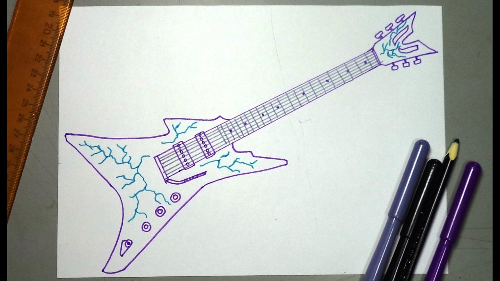

Gitaros vaikams
2020.10.29 09:54
Krepšelis
Krepšelis tuščias Rodyti krepšelį
(0.00 Lt.) +370 694 64178 Naujos prekės KOLONĖLIŲ NUOMA Kaip išsirinkti gitarą? Prekės (mob. versija) Į Pradžią KONTAKTAI
Gitaros
Mušamieji
Styginiai instrumentai bei priedai
Pučiamieji
Klavišiniai instrumentai bei priedai
Priedai gitaroms
Audio technika
Instrumentai vaikams
Pagrindinis Gitaros Gitaros vaikams Rūšiuoti pagal Prekės kaina -/+ Gamintojas: Pasirinkite gamintoją Alvera Chord Cordoba Fender Gewa Stagg Yamaha Rezultatai 1 - 19 iš 1920 40 80 200
Gitaros vaikams
Vaikiška klasikinė gitara Chord CC34 (3/4)
Klasikinė gitara vaikui Chord CC34...
Prekės informacija 71,00 € (245.15 Lt. )Vaikiška klasikinė gitara Alvera ACG100 (1/4)
Vaikiška klasikinė gitara Alvera...
Prekės informacija 75,00 € (258.96 Lt. )Vaikiška klasikinė gitara Stagg SCL50 NAT (1/2)
Klasikinė gitara vaikui Stagg SCL50 NAT...
Prekės informacija 75,00 € (258.96 Lt. )Vaikiška klasikinė gitara Stagg C505 DRAGONFLY (1/4)
Graži ir spalvinga 1/4 dydžio vaikiška...
Prekės informacija 67,00 € 75,00 € (258.96 Lt. )Vaikiška klasikinė gitara Stagg SCL50 BLK (1/2)
Klasikinė gitara vaikui Stagg SCL50 BLK...
Prekės informacija 80,00 € (276.22 Lt. )Vaikiška klasikinė gitara Stagg SCL50 BLK (3/4)
Klasikinė gitara vaikui Stagg SCL50 BLK...
Prekės informacija 84,00 € (290.04 Lt. )Vaikiška klasikinė gitara Stagg C510 DRAGONFLY (1/2)
Graži ir spalvinga 1/2 dydžio vaikiška...
Prekės informacija Norėdami užsakyti praneškite mums 71,00 € 85,00 € (293.49 Lt. )Klasikinės gitaros komplektas vaikui Stagg SCL50 N PACK (3/4)
Klasikinės gitaros komplektas Stagg...
Prekės informacija Norėdami užsakyti praneškite mums 91,00 € (314.20 Lt. )Gitalelė Yamaha GL1 (+ minkštas dėklas)
Tai mažytė vaikiška gitara, panaši į...
Prekės informacija Norėdami užsakyti praneškite mums 95,00 € (328.02 Lt. )Gitalelė Yamaha GL1 TBS (+ minkštas dėklas)
Tai mažytė vaikiška gitara, panaši į...
Prekės informacija Norėdami užsakyti praneškite mums 95,00 € (328.02 Lt. )Vaikiška klasikinė gitara Stagg SCL60 NAT (3/4)
Kokybiška klasikinė gitara vaikui Stagg...
Prekės informacija 97,00 € 105,00 € (362.54 Lt. )Vaikiška klasikinė gitara Gewa Student (1/4) NAT
Vaikiška klasikinė gitara Gewa Student...
Prekės informacija 107,00 € 112,00 € (386.71 Lt. )Vaikiška klasikinė gitara Gewa Student (1/2) NAT
Vaikiška klasikinė gitara Gewa Student...
Prekės informacija Norėdami užsakyti praneškite mums 108,00 € 113,00 € (390.17 Lt. )Vaikiška klasikinė gitara Gewa Student (3/4) NAT
Vaikiška klasikinė gitara Gewa Student...
Prekės informacija Norėdami užsakyti praneškite mums 109,00 € 114,00 € (393.62 Lt. )Vaikiška klasikinė gitara Alvera ACG300 (3/4)
Klasikinė gitara Alvera ACG300 (3/4)....
Prekės informacija Norėdami užsakyti praneškite mums 117,00 € (403.98 Lt. )Klasikinė gitara Fender ESC-80 (3/4) + dėklas
Klasikinė gitara Fender ESC-80 (3/4) su...
Prekės informacija 118,00 € (407.43 Lt. )Klasikinė gitara Yamaha CGS103A (3/4)
Klasikinė gitara Yamaha CGS103A (3/4)...
Prekės informacija 138,00 € (476.49 Lt. )Klasikinė gitara Cordoba C1M (3/4)
Klasikinė gitara Cordoba C1M (3/4)...
Prekės informacija Norėdami užsakyti praneškite mums 138,00 € (476.49 Lt. )Akustinė gitara Fender Sonoran Mini Nat WN (+ dėklas)
Mažo dydžio akustinė gitara su dėklu...
Prekės informacija 169,00 € 179,00 € (618.05 Lt. ) Apie mus Kodėl verta rinktis Grojam ? Kontaktai Kur mokytis groti ?
STRAIPSNIAI
Kaip išsirinkti gitarą?
Pirmoji gitara: akustinė ar klasikinė?
Kaip suderinti gitarą?
Gitarų dydžiai
PAGALBA
PRISTATYMAS
Pinigų grąžinimo garantija
Kaip išsirinkti ir nusipirkti gitarą ?
Instrumentų priežiūra
Klientų atsiliepimai
PREKĖS
Gitaros
Mušamieji
Styginiai
Nešiojamos aktyvios kolonėlės
Klavišiniai
Priedai
Audio technika
Instrumentai vaikams
Turite klausimų? Norite užsakyti? Informacija teikiama ir užsakymai priimami telefonu +37069464178 ir el. paštu info@grojam.lt © 2013-2020 Grojam.lt
